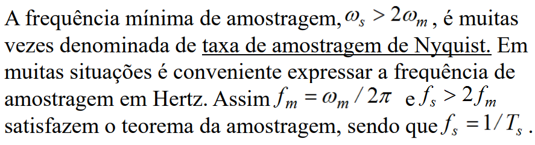

◉ Formatação e Modulação em Banda Básica
Teorema de amostragem
Amostras de um sinal nem sempre determinam de maneira
única o sinal de tempo contínuo correspondente.
Apenas com o conhecimento das amostras de um sinal não
é possível determinar o comportamento do sinal entre as
amostras. Uma forma de minimizar este problema ocorre
quando o sinal a ser amostrado apresenta transições suaves
entre as amostras. A “suavidade”, ou taxa com o qual o sinal
no domínio do tempo varia está diretamente relacionada com
a frequência máxima presente no sinal.
Para reconstruir de maneira única um sinal de tempo contínuo a partir de suas amostras,
deve haver uma correspondência única entre as FTs do sinal de tempo contínuo e o sinal
amostrado. Estas FTs se relacionam de forma única se o processo de amostragem não introduzir
“aliasing”. Tal exigência é formalmente estabelecida da
seguinte maneira:
